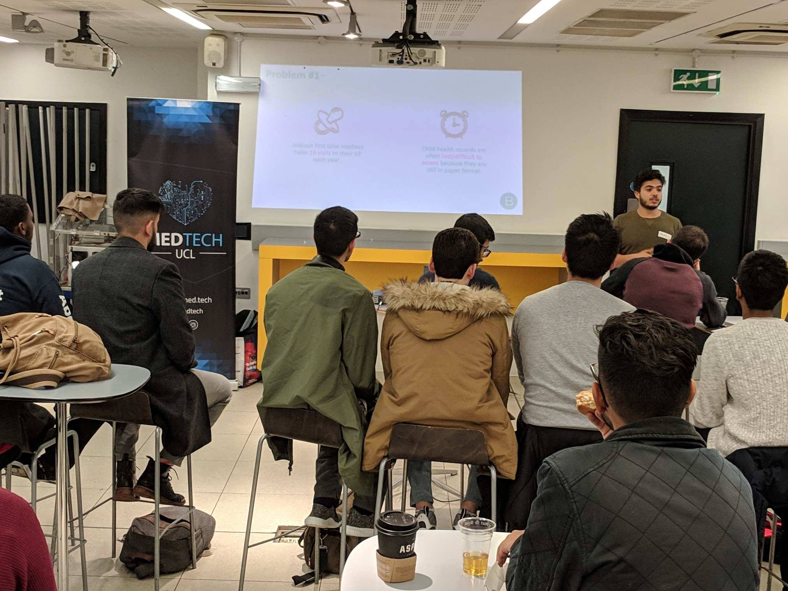
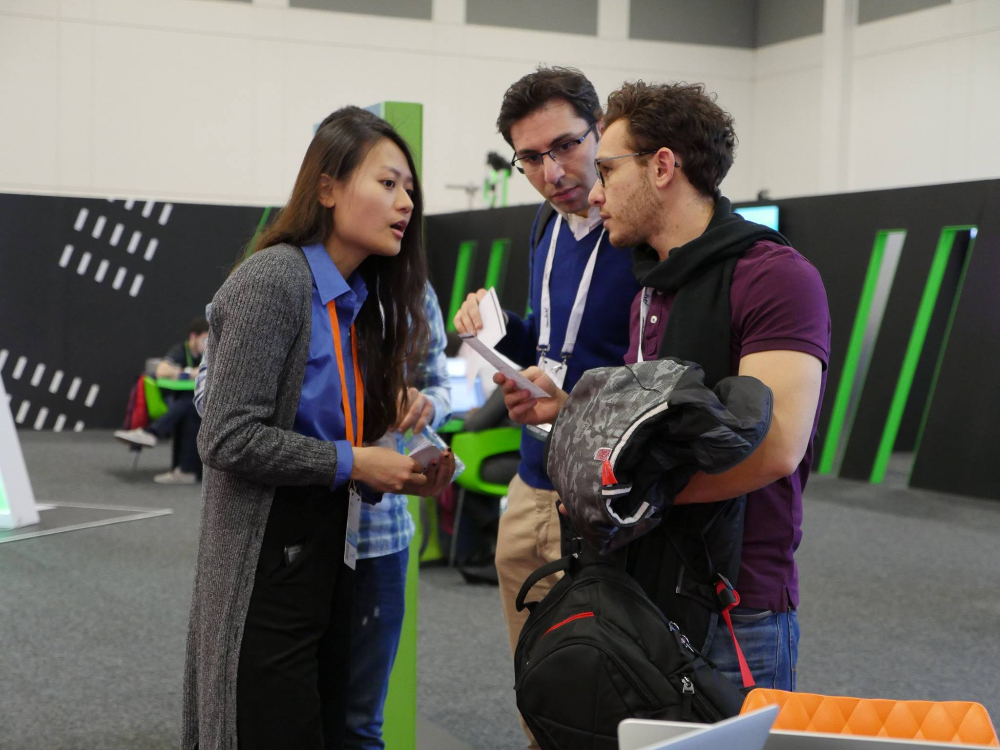

About me
I am currently studying Human-computer interaction at UCL. I enjoy conducting research to uncover user need, assess usability and generate actionable insights.
For interaction design portfolio, click here.
For other research projects, continue with this page.
I have a lot of updates to share and trying to find time to do so. I will revamp this whole site in June 2019, please stay tuned! :)

At school
At UCL, I'm a MSc student, the Tech Officer at UCL MedTech & the Education Officer at London Blockchain Lab.Some of the projects I have done include designing research to study the impact of automobile voice interface usage on driver stress, qualitative and quantitative (lab experiment) data analysis as well as a group project to design visitor experience in museum.
Besides study, I especially love the student activities in London universities. I was a mentor in PulseHack, a health technology hackathon co-organised by UCL MedTech and MIT hackathon team. I also helped out in MedTech conferences. The above picture is a startup fireside chat organised by UCL MedTech.

At work
At Cisco, I was working in a software team, where I was responsible for some more product management work. I was fortunate enough to have the opportunity to represent my team in conferences. I delivered 2 product presentations and led 2 interactive workshops with software engineers from my team. The above is taken at CiscoLive Berlin.
Prior to that, I worked in IBM as a user testing intern. It was a great client side experience as my team was working inside an airline company. The goal of the project was to streamline an online booking system. I wrote many (>1k) test cases and got a taste of working directly with the client through project meetings.
At school
At UCL, I'm a MSc student, the Tech Officer at UCL MedTech & the Education Officer at London Blockchain Lab. Some of the projects I have done last term include designing research to study the impact of automobile voice interface usage on driver stress, analysing data with R, JASP and Nvivo, as well as researching and designing visitor experience in museum.Besides study, I especially love the student activities in London universities. I was a mentor in PulseHack, a health technology hackathon co-organised by UCL MedTech and MIT hackathon team. I also helped out in many inspirational MedTech conferences. I took the above picture in a startup fireside chat organised by my society.

At home
I love yoga and cat.